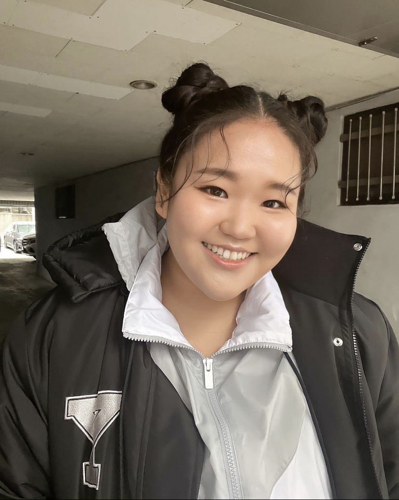

Mireu Mimi Kim
Hello! I'm an undergraduate student currently enrolled at Yonsei Univerisity, Korea. My major is called "Applied Information Engineering" which is a course that is focused on data and artificial intellence.
I am a sophomore and am part of the student council. I take 7 classes: Applied Data Structure; Introduction to Database Management Systems; Web Programming; Information Software Engineering; Modern Society and Economy; Chapel; and Writing.
This website is a homework from my Web Programming class, but it's also a good page that shows me as a student and person. At the moment, I have my profile, timetable, hobbies, and the city that I came from; however, I plan to add more sections along the way. Hopefully this page would be a good introduction of me or a good source to record my career.
Get to know Mimi!

Name: Mireu Kim
Nationality: South Korean
Date of Birth: September 21, 2001
Age: 22
Student No: 2021106071
Family Members: Dad, Mom, 3 sisters
Class Schedule
|
Monday |
Tuesday |
Wednesday |
Thursday |
Friday |
| 9:00 |
|
|
글쓰기 |
응용자료구조 |
글쓰기 |
| 10:00 |
|
|
|
| 11:00 |
|
|
채플 (D) |
|
| 12:00 |
|
현대사회와경제 |
|
|
정보SW공학 |
| 13:00 |
|
웹프로그래밍 |
|
현대사회와경제 |
| 14:00 |
|
|
| 15:00 |
|
|
데이터베이스개론 |
|
| 16:00 |
|
|
|
|
| 17:00 |
|
|
|
|
| 18:00 |
|
|
|
|
|
Hobbies
As much as I have lived in the Philippines for a very long time, most of my hobbies are based in the Philippines. It has been a long time since I have enjoyed my favorite hobbies due to the lack of free time and money. While filling up this page, it feels as if I'm traveling back through time.
Scuba Diving

I prefer the ocean more than the mountains, thus my hobbies are very related to water sports/activities. First of which is scuba diving. Scuba Diving is a sport that allows me to explore what's under the ocean. It's much more interesting compared to sight seeing as I can stay close to water creatures. Every time I go for a dive, I feel like exploring something that hasn't been found.
Jetski

In Korea, jetskiing is a sport that requires a license in order to drive. But in the Philippines, they did not require a license so I could just rent it. When I drive full speed in the ocean, it feels like breaking through and making a new way. When the sun is up, water is clean, and with adequate wind - it's the perfect day to go out for riding.
Traveling

Traveling is a hobby that allows me to explore different types of culture from all around the world. I have not been to many countries but hopefully, I can visit more when I am financially available. As of now, I have been to Singapore, HongKong, and Netherlands.